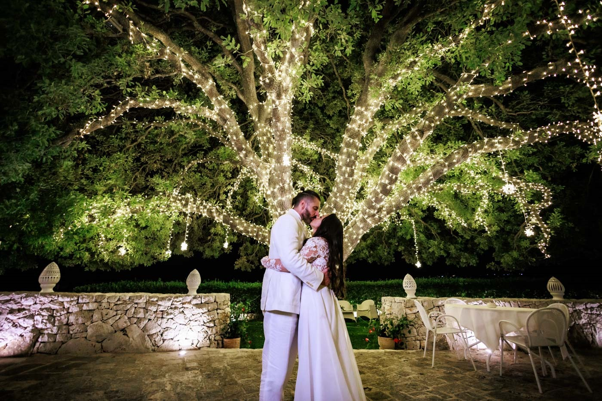

Un matrimonio da vivere,
non semplicemente da organizzare.
Cala dei Balcani a Santa Cesarea Terme, nasce per far vivere agli sposi e ai loro ospiti una giornata in totale libertà, serenità e spensieratezza.
Un luogo dove il mare, la natura e la luce del Salento diventano parte integrante dell’esperienza, creando un’atmosfera autentica ed elegante in cui ogni ospite possa sentirsi accolto e vivere ogni istante con naturalezza.
Per noi il matrimonio
non è un semplice ricevimento.
È un viaggio emozionale che accompagna gli sposi dal primo brindisi fino all’ultimo ballo, in un ambiente esclusivo dove ogni dettaglio contribuisce a creare ricordi destinati a durare nel tempo.
Un luogo da personalizzare secondo la vostra storia
Ogni coppia è diversa. Gli spazi della struttura sono pensati per essere vissuti e interpretati secondo lo stile degli sposi, lasciando piena libertà nella personalizzazione degli allestimenti, dell’organizzazione e dei momenti della giornata.


Il mare è il nostro vero valore.
Chi sceglie una location sul mare desidera vivere ogni momento all’aperto, circondato dalla bellezza della natura e da panorami capaci di emozionare. Ed è proprio questo che rende Cala dei Balcani un luogo unico.
Le terrazze panoramiche, gli spazi immersi nel verde mediterraneo, la sala elegante e la vista sul mare permettono agli ospiti di vivere un matrimonio dinamico, dove ogni fase della giornata trova la propria cornice ideale.
Si distingue soprattutto per la capacità di garantire agli sposi la serenitjà di vivere il proprio giorno senza imprevisti. Per questo Cala dei Balcani dispone di una Sala Cattedrale perfettamente integrata con gli spazi esterni, offrendo la possibilità di mantenere inalterata l’atmosfera dell’evento in qualsiasi condizione climatica, senza rinunciare all’eleganza, alla vista sul mare e alla qualità dell’esperienza.
Perché Cala dei Balcani?
- ✓ Un solo matrimonio al giorno
- ✓ Esclusività della struttura
- ✓ Cerimonia vista mare
- ✓ Destination Wedding Experience
- ✓ Santa Cesarea Terme, una delle destinazioni più autentiche del Salento
- ✓ La luce, il blu del mare, la pietra della costa, il tramonto, la brezza marina


La Location del Matrimonio
non è solo un “posto”
“La location del matrimonio non è solo un ‘posto’ dove accogliere gli ospiti. Un matrimonio è molto di più di questo oggi.”
Cala dei Balcani è abilitata per le cerimonie civili: il vostro matrimonio può essere celebrato direttamente nella nostra location, con il mare Adriatico come sfondo e il cielo del Salento come cornice.
- ✓ Cerimonie civili in loco (Casa Comunale)
- ✓ Unioni civili e simboliche
- ✓ Allestimenti floreali su misura
- ✓ Fino a 230 ospiti
- ✓ Esclusività totale della struttura
Serate che Rimangono nel Cuore
Il ricevimento a Cala dei Balcani è un’esperienza multisensoriale: la luce del tramonto che tinge di oro i calici di prosecco, il profumo del mare mescolato agli aromi della cucina salentina, la musica che echeggia tra le terrazze.
Quando cala la sera, la Torre Saracena si illumina — un omaggio alla storia che trasforma l’intera location in un’opera d’arte vivente. I vostri ospiti non dimenticheranno mai questa visione.
Ogni ricevimento è unico: lavoriamo a fianco della coppia per creare un’atmosfera personalizzata, dai colori dei fiori al menù, dalla musica all’animazione degli ospiti.
Il Nostro Servizio Completo

Allestimenti Floreali
Decorazioni su misura che raccontano la vostra storia. Ortensie, rose, e i profumi del Salento.
Menù Gourmet
Alta cucina salentina con prodotti freschi del territorio. Il pesce del giorno, l’olio locale, i vini del Salento.

Musica & Animazione
Band live, DJ set, momenti di interazione con gli ospiti. Un programma personalizzato per ogni coppia.

Wedding Creator
Un team dedicato vi accompagna dalla prima consulenza all’ultimo ballo. Ogni dettaglio curato con amore.
Storie d’Amore a Cala dei Balcani
★★★★★La cerimonia civile in terrazza con il mare sullo sfondo è stata magica. Francesco e il suo team hanno curato ogni minimo dettaglio. I nostri ospiti sono ancora emozionati.
— Elena & Giorgio, Bologna
★★★★★Dalla prima visita ci siamo innamorati del posto. La Torre illuminata durante la cena è uno spettacolo che non si dimentica. Grazie per aver reso perfetto il nostro giorno.
— Valentina & Andrea, Firenze
★★★★★Avevamo clienti internazionali e tutti sono rimasti senza parole. Il servizio è stato di altissimo livello, il cibo straordinario, il posto unico. Highly recommended.
— Sarah & James, London
Inizia a Pianificare il Tuo Matrimonio
Raccontaci il vostro sogno. Vi risponderemo entro 24 ore con tutte le informazioni di cui avete bisogno.